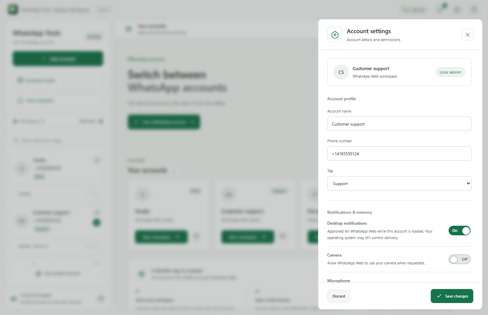

Multiple WhatsApp accounts on one desktop
Keep personal conversations, work chats and different business accounts in their own workspaces. WhatsApp Tools opens separate WhatsApp Web sessions in one desktop app, so you can switch accounts without signing out each time.
Link each account with your phone
- Download WhatsApp Tools for your supported computer and open the app.
- Choose Add account and give the workspace a recognizable name.
- On the corresponding phone, open WhatsApp, then Linked devices, then Link a device. Scan the live QR code in that workspace.
- Repeat for another account, using the phone for that account.
Each workspace is a linked session, not a new WhatsApp account. You need access to the relevant account on your phone. WhatsApp controls linked-device availability and limits.
Keep accounts easy to find
Use account names, tags and search to find the right workspace. Arrange accounts in an order that suits your day, switch from the system tray, and choose which accounts can show desktop alerts. Unread counts come from WhatsApp page titles. Profile pictures can appear when WhatsApp exposes the account picture, with initials as a fallback.

Control activity and local storage
Unload pages you are not using, or enable optional memory cleanup for inactive accounts. Account labels and preferences stay in your local app profile. Linked sessions maintain separate browser data on your computer. To revoke a session, remove it from Linked devices on your phone.
Available desktop editions
Downloads support Windows x64, Apple Silicon Mac (M1 or newer), and Linux x64 through AppImage or Debian packages. Windows is unsigned and can show SmartScreen or Unknown publisher warnings. An Intel Mac download is not listed; the Mac App Store release is pending.
Try every feature for 30 days
No payment details are required to start the direct-download trial. Premium activation for India is ₹500 after the trial. Store purchases are separate.
Choose your desktop download →